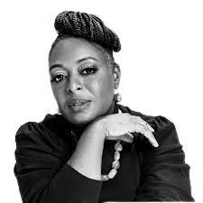

Engenheira elétrica: Kimberly Bryant, fundadora da organização Black Girls CODE, inspirou-se na sua história e na própria filha para capacitar meninas negras em programação. 
Kimberly Bryant é uma figura inspiradora que fundou a organização sem fins lucrativos Black Girls CODE, um projeto inovador que tem impactado de maneira significativa a comunidade negra nos campos da tecnologia e da programação. Sua jornada e visão demonstram o poder de uma única pessoa em criar oportunidades e transformar vidas.
Nascida em Memphis, Tennessee, Kimberly Bryant cresceu em uma época em que havia uma escassez de diversidade no setor de tecnologia. Ela testemunhou em primeira mão a falta de representação de minorias, especialmente mulheres negras, nesse campo. A ausência de modelos a seguir e oportunidades limitadas para aprender programação inspirou Bryant a tomar medidas.
Em 2011, Kimberly Bryant fundou a Black Girls CODE com o objetivo de fornecer às jovens negras as habilidades e o conhecimento necessários para prosperar na indústria de tecnologia. A organização busca superar as barreiras que muitas vezes impedem as meninas negras de ingressar nesse campo, oferecendo cursos e workshops interativos em programação, robótica, desenvolvimento de aplicativos e outras disciplinas relacionadas à tecnologia.
O Black Girls CODE é mais do que apenas uma escola de programação; é um movimento que empodera as meninas negras, mostrando-lhes que elas têm um lugar no mundo da tecnologia. A organização ajuda a construir a autoestima, confiança e habilidades técnicas necessárias para prosperar nesse setor. Ao fazer isso, ela está abrindo portas para um futuro mais inclusivo e diversificado na tecnologia.
Kimberly Bryant é um exemplo inspirador de como uma pessoa comprometida pode fazer a diferença na vida das futuras gerações. Ela não apenas quebrou barreiras, mas também abriu caminhos para que meninas negras tenham sucesso em um setor que há muito tempo enfrenta um problema de falta de diversidade. Seu trabalho representa uma luta contínua por igualdade de oportunidades e inclusão, e seu legado continua a inspirar pessoas de todas as origens a seguirem seus próprios sonhos e acreditarem que a tecnologia é um campo para todos.